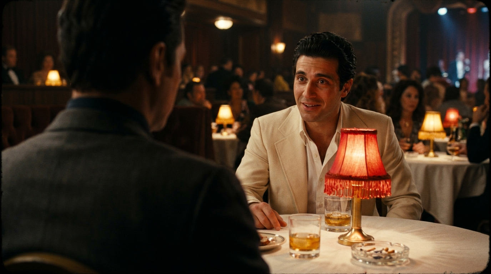
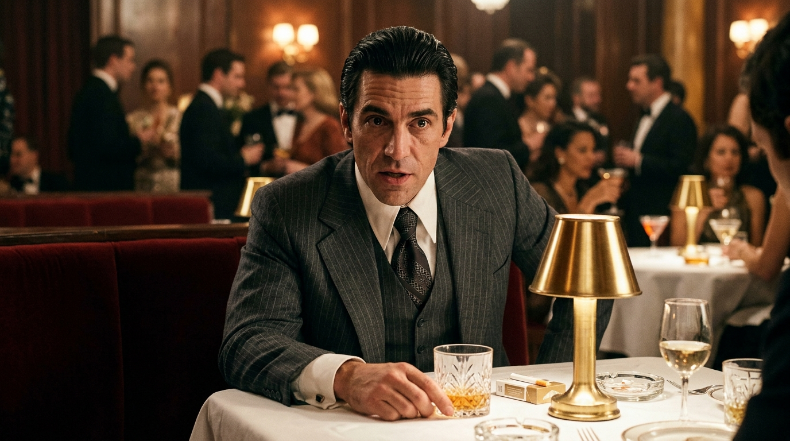
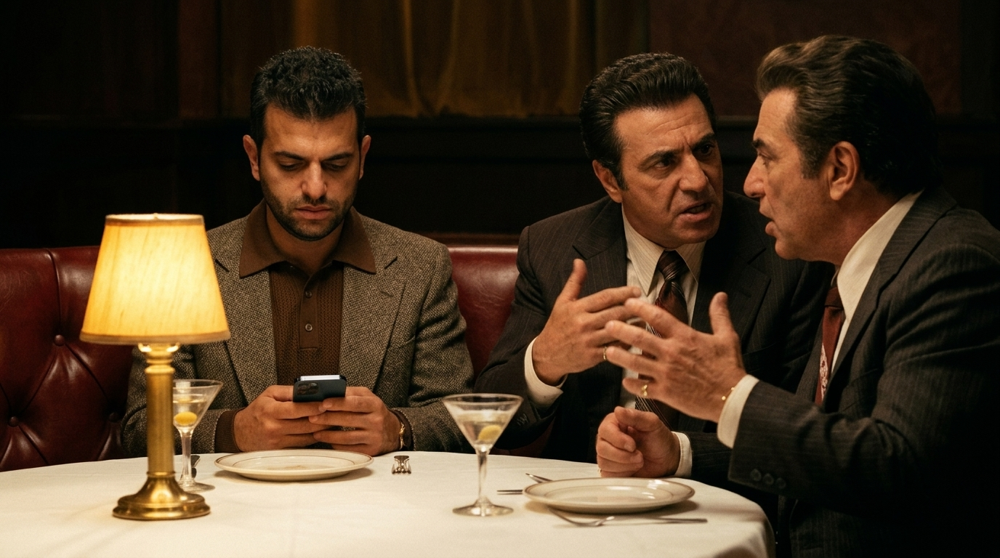
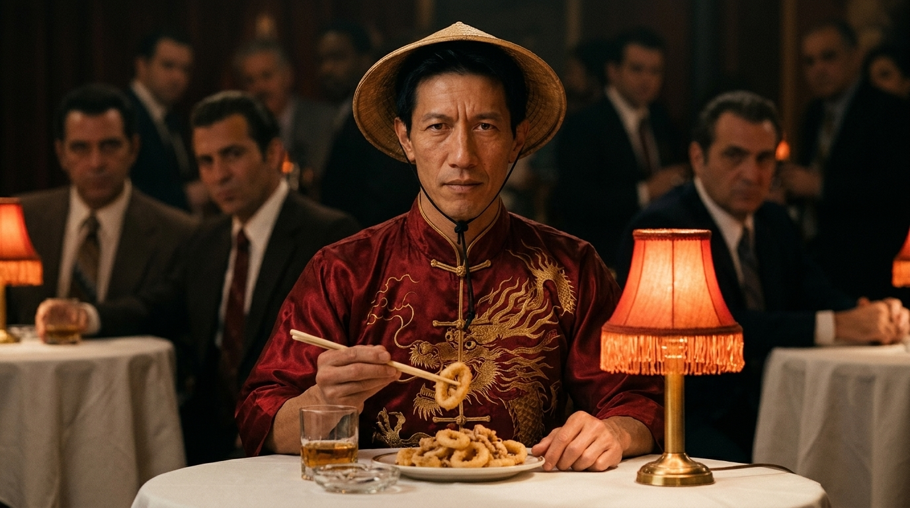
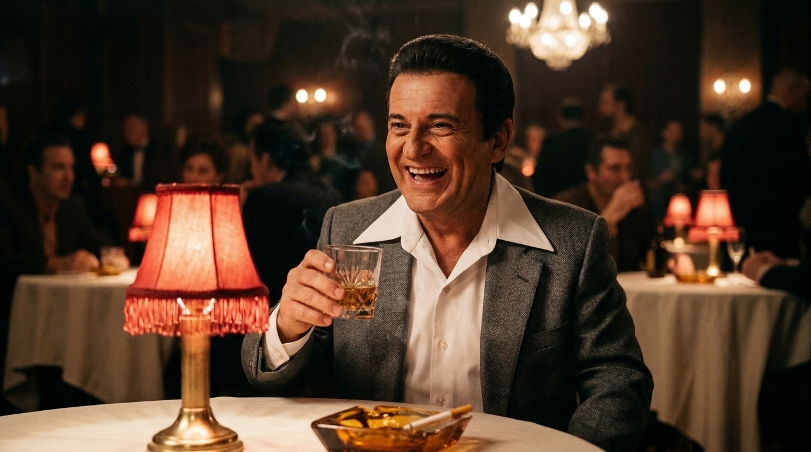

Scorsese 1970s 35mm · Damon, Hooman, Deron, Zach, Tommy DeVito & Henry Hill · Ingredient Prep: 25m 37s · Render Time: 100% LTX-2.5 on A100 (~20m + 3m GF_04/12 fixes, 2m 08s 1080p master)
Original movie frames extracted directly from the scene to match camera angles, lenses, lighting contrast, and color palette.
Every keyframe, spoken line, duration, and prompt queued for MiniMax H3 prior to rendering.

GF_GF_01 · Henry Hill (6.6s)
Keyframe: gf_shot05_henry_ots.jpg
Line: "Every time we walked through the Copa kitchen, we got the best table. Even when Damon was dying."
Prompt: <Picture 1> is the exact starting frame of this photorealistic 35mm live-action movie scene.
<Audio 1> is the exact spoken dialogue audio track for the speaking character in <Picture 1> and is reused verbatim.
Keep every character face, costume, lighting, lens, and set geometry strictly faithful to <Picture 1>. Medium over-the-shoulder shot across a candlelit Copacabana front-row booth table: Henry Hill in an ivory dinner jacket smiles eagerly across the red-shaded table lamp and crystal scotch glasses, gesturing warmly as he speaks.
Subtle controlled Scorsese cinema camera push-in, warm 1970s red tungsten tungsten glow, authentic 35mm film grain, exact lip sync to <Audio 1>.

GF_GF_02 · Deron (5.9s)
Keyframe: gf_shot03_deron_booth.jpg
Line: "Aiya, table so small lah! In San Gabriel dim sum house, cart come fast with har gow!"
Prompt: <Picture 1> is the exact starting frame of this photorealistic 35mm live-action movie scene.
<Audio 1> is the exact spoken dialogue audio track for the speaking character in <Picture 1> and is reused verbatim.
Keep every character face, costume, lighting, lens, and set geometry strictly faithful to <Picture 1>. Warm tungsten Copacabana table medium shot: Deron in a crimson silk dragon robe and conical straw hat sits at the white tablecloth between two mobsters, smiling proudly over a plate of calamari while speaking.
Subtle controlled Scorsese cinema camera push-in, warm 1970s red tungsten tungsten glow, authentic 35mm film grain, exact lip sync to <Audio 1>.

GF_GF_03 · Tommy DeVito (5.9s)
Keyframe: gf_shot01_tommy_funny.jpg
Line: "Who invited the Emperor of Monterey Park? Take the lampshade off at my table, Henry."
Prompt: <Picture 1> is the exact starting frame of this photorealistic 35mm live-action movie scene.
<Audio 1> is the exact spoken dialogue audio track for the speaking character in <Picture 1> and is reused verbatim.
Keep every character face, costume, lighting, lens, and set geometry strictly faithful to <Picture 1>. Tight candlelit table medium shot of Tommy DeVito in dark pinstriped suit leaning forward past the glowing brass lamp and whiskey glass, eyes sharp and narrowing as he delivers his biting line with snappy Brooklyn intensity.
Subtle controlled Scorsese cinema camera push-in, warm 1970s red tungsten tungsten glow, authentic 35mm film grain, exact lip sync to <Audio 1>.

GF_GF_04 · Zach (10.1s)
Keyframe: gf_shot04_zach_club.jpg
Line: "Dude, relax. I'm checking X—wait, ChatGPT says this steakhouse olive oil has awful omega-six ratios, lol."
Prompt: <Picture 1> is the exact starting frame of this photorealistic 35mm live-action movie scene.
<Audio 1> is the exact spoken dialogue audio track ONLY for Zach on the far left in the beige tweed jacket in <Picture 1>, reused verbatim.
Keep every character face, costume, lighting, lens, and set geometry strictly faithful to <Picture 1>. Fixed booth framing anchored 100% to <Picture 1> in warm red Copacabana lighting: ONLY the bearded young man on the far LEFT (Zach) looks down at his smartphone and speaks calmly and casually delivering <Audio 1> with exact lip sync while the two suited mobsters in the middle and far right keep their mouths completely CLOSED listening quietly without ever speaking.
Keep camera framing anchored to <Picture 1>, warm 1970s red tungsten glow, authentic 35mm film grain, exact lip sync ONLY on Zach on the far left.

GF_GF_05 · Damon (7.3s)
Keyframe: gf_shot02_damon_tux.jpg
Line: "Not funny, Zach. That calamari hit like a brick. Hold my spot while I sprint to transition."
Prompt: <Picture 1> is the exact starting frame of this photorealistic 35mm live-action movie scene.
<Audio 1> is the exact spoken dialogue audio track for the speaking character in <Picture 1> and is reused verbatim.
Keep every character face, costume, lighting, lens, and set geometry strictly faithful to <Picture 1>. Tight close-up across the candlelit white tablecloth: Damon in an open black tuxedo jacket over grey tank top sits gripping his stomach beneath the table under glistening brow sweat and dark-teal Wayfarers, speaking deadpan.
Subtle controlled Scorsese cinema camera push-in, warm 1970s red tungsten tungsten glow, authentic 35mm film grain, exact lip sync to <Audio 1>.

GF_GF_06 · Deron (6.6s)
Keyframe: gf_copa_02_deron_closeup.jpg
Line: "Wah, Tommy! Seventy-dollar steak dry like cardboard lah! Din Tai Fung soup dumpling juice explode way better!"
Prompt: <Picture 1> is the exact starting frame of this photorealistic 35mm live-action movie scene.
<Audio 1> is the exact spoken dialogue audio track for the speaking character in <Picture 1> and is reused verbatim.
Keep every character face, costume, lighting, lens, and set geometry strictly faithful to <Picture 1>. Medium close-up at the Copacabana booth: Deron in crimson silk dragon robe and conical straw hat lifts a ring of fried calamari cleanly with wooden chopsticks beside a red-fringed lamp and scotch glass, beaming warmly as he speaks.
Subtle controlled Scorsese cinema camera push-in, warm 1970s red tungsten tungsten glow, authentic 35mm film grain, exact lip sync to <Audio 1>.

GF_GF_07 · Henry Hill (7.3s)
Keyframe: gf_shot15_table_wide.jpg
Line: "He's a real character, Tommy. You know, Deron's funny. Tell him about the chicken feet, Deron."
Prompt: <Picture 1> is the exact starting frame of this photorealistic 35mm live-action movie scene.
<Audio 1> is the exact spoken dialogue audio track for the speaking character in <Picture 1> and is reused verbatim.
Keep every character face, costume, lighting, lens, and set geometry strictly faithful to <Picture 1>. Warm smoke-filled wide table shot framing all six men around the Copacabana linen table with red lamps and silver champagne bucket: Henry leans in anxiously smiling across the table while addressing the group.
Subtle controlled Scorsese cinema camera push-in, warm 1970s red tungsten tungsten glow, authentic 35mm film grain, exact lip sync to <Audio 1>.

GF_GF_08 · Tommy DeVito (7.3s)
Keyframe: gf_shot08_tommy_closeup.jpg
Line: "Funny how? Wait—you think I'm funny? What's funny about my steakhouse, bamboo hat? Tell me."
Prompt: <Picture 1> is the exact starting frame of this photorealistic 35mm live-action movie scene.
<Audio 1> is the exact spoken dialogue audio track for the speaking character in <Picture 1> and is reused verbatim.
Keep every character face, costume, lighting, lens, and set geometry strictly faithful to <Picture 1>. Razor-tight 50mm Scorsese dolly push-in on Tommy DeVito's stony unblinking face beside the glowing red-fringed table lamp in smoky club light, eyes boring coldly forward as he snaps 'Funny how?!'.
Subtle controlled Scorsese cinema camera push-in, warm 1970s red tungsten tungsten glow, authentic 35mm film grain, exact lip sync to <Audio 1>.

GF_GF_09 · Damon (7.3s)
Keyframe: gf_copa_01_damon_ots.jpg
Line: "Relax, Tommy. I did deck burpees in LA County jail—jail, never prison. You don't rattle me."
Prompt: <Picture 1> is the exact starting frame of this photorealistic 35mm live-action movie scene.
<Audio 1> is the exact spoken dialogue audio track for the speaking character in <Picture 1> and is reused verbatim.
Keep every character face, costume, lighting, lens, and set geometry strictly faithful to <Picture 1>. Over-the-shoulder shot across the Copacabana table: Damon in black tuxedo jacket and grey tank top grimaces mildly gripping his cramped stomach across from the back-turned suit shoulder, speaking calmly.
Subtle controlled Scorsese cinema camera push-in, warm 1970s red tungsten tungsten glow, authentic 35mm film grain, exact lip sync to <Audio 1>.
GF_GF_10 · Deron (5.9s)
Keyframe: gf_shot03_deron_booth.jpg
Line: "Aiya, why you angry lah? You funny like Stephen Chow movie! Plus my fake Rolex ticker cleaner!"
Prompt: <Picture 1> is the exact starting frame of this photorealistic 35mm live-action movie scene.
<Audio 1> is the exact spoken dialogue audio track for the speaking character in <Picture 1> and is reused verbatim.
Keep every character face, costume, lighting, lens, and set geometry strictly faithful to <Picture 1>. Medium booth shot: Deron in red silk dragon robe and straw hat sits happily between two suited mobsters behind a plate of calamari and whiskey glasses, holding up a crisp gesture as he delivers his Rolex line.
Subtle controlled Scorsese cinema camera push-in, warm 1970s red tungsten tungsten glow, authentic 35mm film grain, exact lip sync to <Audio 1>.

GF_GF_11 · Tommy DeVito (7.3s)
Keyframe: gf_copa_04_tommy_laugh.jpg
Line: "A fake Rolex? At the Copacabana?! Am I a clown to you? Do I amuse you?!"
Prompt: <Picture 1> is the exact starting frame of this photorealistic 35mm live-action movie scene.
<Audio 1> is the exact spoken dialogue audio track for the speaking character in <Picture 1> and is reused verbatim.
Keep every character face, costume, lighting, lens, and set geometry strictly faithful to <Picture 1>. Medium close-up at the candlelit Copacabana booth: Tommy DeVito in a grey jacket and open white collar laughs wildly holding his crystal scotch glass beside the smoking ashtray, exploding into volcanic Scorsese energy.
Subtle controlled Scorsese cinema camera push-in, warm 1970s red tungsten tungsten glow, authentic 35mm film grain, exact lip sync to <Audio 1>.

GF_GF_12 · Zach (8.0s)
Keyframe: gf_copa_03_zach_ots.jpg
Line: "Wait, Tommy—I don't think you realize! On X, that watch factory is thirty percent off plus tax!"
Prompt: <Picture 1> is the exact starting frame of this photorealistic 35mm live-action movie scene.
<Audio 1> is the exact spoken dialogue audio track ONLY for Zach on the left in the brown tweed jacket in <Picture 1>, reused verbatim.
Keep every character face, costume, lighting, lens, and set geometry strictly faithful to <Picture 1>. Fixed two-shot across the red-fringed table lamp anchored strictly to <Picture 1>: ONLY the bearded young man on the LEFT (Zach) scrolls his smartphone, raises his chin politely toward Tommy, and speaks calmly delivering <Audio 1> with exact lip sync while the older grey-haired man on the right (Tommy) listens quietly with his mouth completely CLOSED the entire time.
Keep camera framing anchored to <Picture 1>, warm 1970s red tungsten glow, authentic 35mm film grain, exact lip sync ONLY on Zach on the left.

GF_GF_13 · Hooman (8.7s)
Keyframe: gf_shot10_hooman_waiter.jpg
Line: "Hoobeee? Chetoreee?! Tommy! Henry! Look at my boys in the booth! Everybody eating calamari, huuuuh?"
Prompt: <Picture 1> is the exact starting frame of this photorealistic 35mm live-action movie scene.
<Audio 1> is the exact spoken dialogue audio track for the speaking character in <Picture 1> and is reused verbatim.
Keep every character face, costume, lighting, lens, and set geometry strictly faithful to <Picture 1>. Medium Copacabana dining room shot: Hooman in a burgundy tuxedo waiter jacket carries a glowing white Magic Cone upright on a silver tray toward the booth of white-jacketed gangsters, speaking excitedly like a pitchman.
Subtle controlled Scorsese cinema camera push-in, warm 1970s red tungsten tungsten glow, authentic 35mm film grain, exact lip sync to <Audio 1>.
GF_GF_14 · Henry Hill (8.0s)
Keyframe: gf_shot05_henry_ots.jpg
Line: "Who the hell is on the Copa television? Did Paulie buy a cable channel from a Persian?"
Prompt: <Picture 1> is the exact starting frame of this photorealistic 35mm live-action movie scene.
<Audio 1> is the exact spoken dialogue audio track for the speaking character in <Picture 1> and is reused verbatim.
Keep every character face, costume, lighting, lens, and set geometry strictly faithful to <Picture 1>. Over-the-shoulder shot across the table toward Henry Hill in his ivory dinner jacket looking genuinely baffled over the glowing red lamp and scotch glasses as he asks what is on the tray.
Subtle controlled Scorsese cinema camera push-in, warm 1970s red tungsten tungsten glow, authentic 35mm film grain, exact lip sync to <Audio 1>.
GF_GF_15 · Hooman (8.7s)
Keyframe: gf_shot10_hooman_waiter.jpg
Line: "Tommy, dood! Two guys fight over check—boom! Auto-Taarof Wallet shoot your Amex! Plus Magic Cone, huuuuh?"
Prompt: <Picture 1> is the exact starting frame of this photorealistic 35mm live-action movie scene.
<Audio 1> is the exact spoken dialogue audio track for the speaking character in <Picture 1> and is reused verbatim.
Keep every character face, costume, lighting, lens, and set geometry strictly faithful to <Picture 1>. Medium booth shot of Hooman in burgundy waiter jacket standing over the Copacabana table holding his silver platter with the glowing white Magic Cone proudly toward the seated mobsters while delivering his shameless pitch.
Subtle controlled Scorsese cinema camera push-in, warm 1970s red tungsten tungsten glow, authentic 35mm film grain, exact lip sync to <Audio 1>.
GF_GF_16 · Tommy DeVito (6.6s)
Keyframe: gf_shot01_tommy_funny.jpg
Line: "You want me to shoot a funnel into a guy's Amex? I'm gonna whack that television set!"
Prompt: <Picture 1> is the exact starting frame of this photorealistic 35mm live-action movie scene.
<Audio 1> is the exact spoken dialogue audio track for the speaking character in <Picture 1> and is reused verbatim.
Keep every character face, costume, lighting, lens, and set geometry strictly faithful to <Picture 1>. Tense candlelit booth shot: Tommy DeVito in a dark striped three-piece suit leans aggressively over his crystal scotch glass beside the brass lamp, erupting in sputtering mob outrage.
Subtle controlled Scorsese cinema camera push-in, warm 1970s red tungsten tungsten glow, authentic 35mm film grain, exact lip sync to <Audio 1>.
GF_GF_17 · Damon (6.6s)
Keyframe: gf_shot02_damon_tux.jpg
Line: "Not tonight, Tommy. My CGM says two-ten and my wetsuit muscles are failing. Clear the kitchen lane."
Prompt: <Picture 1> is the exact starting frame of this photorealistic 35mm live-action movie scene.
<Audio 1> is the exact spoken dialogue audio track for the speaking character in <Picture 1> and is reused verbatim.
Keep every character face, costume, lighting, lens, and set geometry strictly faithful to <Picture 1>. Tight booth close-up on Damon in open tuxedo jacket and grey tank top clutching his stomach in escalating sweat beside two martini glasses and brass lamp, speaking briskly before pushing up from the seat.
Subtle controlled Scorsese cinema camera push-in, warm 1970s red tungsten tungsten glow, authentic 35mm film grain, exact lip sync to <Audio 1>.
GF_GF_18 · Deron (5.9s)
Keyframe: gf_copa_02_deron_closeup.jpg
Line: "Damon! Use hot water in bathroom lah! Tonight I pay check with fake watch trick—see ya!"
Prompt: <Picture 1> is the exact starting frame of this photorealistic 35mm live-action movie scene.
<Audio 1> is the exact spoken dialogue audio track for the speaking character in <Picture 1> and is reused verbatim.
Keep every character face, costume, lighting, lens, and set geometry strictly faithful to <Picture 1>. Medium Copacabana close-up: Deron in red silk dragon robe and conical straw hat raises a crisp calamari ring playfully with his chopsticks beside the red lamp while speaking smoothly to the table.
Subtle controlled Scorsese cinema camera push-in, warm 1970s red tungsten tungsten glow, authentic 35mm film grain, exact lip sync to <Audio 1>.
GF_GF_19 · Hooman (13.7s)
Keyframe: gf_shot10_hooman_waiter.jpg
Line: "Fuck that shit, Tommy, dood! Fifty-fifty on the Copacabana Cone! Tell Darren I got guy in Encino—"
Prompt: <Picture 1> is the exact starting frame of this photorealistic 35mm live-action movie scene.
<Audio 1> is the exact spoken dialogue audio track for the speaking character in <Picture 1> and is reused verbatim.
Keep every character face, costume, lighting, lens, and set geometry strictly faithful to <Picture 1>. Silent reaction beat (no on-camera speaking mouth movement) of Hooman in burgundy waiter jacket tilting his silver tray slightly over the white tablecloth with wide bewildered eyes as a heavy bottle shatters off-screen.
Subtle controlled Scorsese cinema camera push-in, warm 1970s red tungsten tungsten glow, authentic 35mm film grain, exact lip sync to <Audio 1>.
GF_GF_20 · Henry Hill (12.2s)
Keyframe: gf_shot15_table_wide.jpg
Line: "Right after that night, I became an average nobody. Ordered dim sum and asked ChatGPT about olive trees."
Prompt: <Picture 1> is the exact starting frame of this photorealistic 35mm live-action movie scene.
<Audio 1> is the exact spoken dialogue audio track for the speaking character in <Picture 1> and is reused verbatim.
Keep every character face, costume, lighting, lens, and set geometry strictly faithful to <Picture 1>. Slow Scorsese wide Copacabana table dolly-in through trailing cigarette haze framing Deron, Damon holding his stomach, Henry, and Zach staring intensely around the silver ice bucket and crimson-shaded lamps as Henry delivers his closing line.
Subtle controlled Scorsese cinema camera push-in, warm 1970s red tungsten tungsten glow, authentic 35mm film grain, exact lip sync to <Audio 1>.